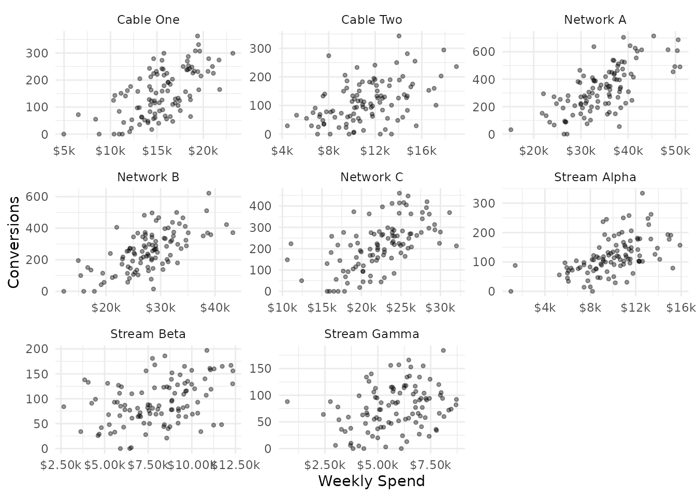
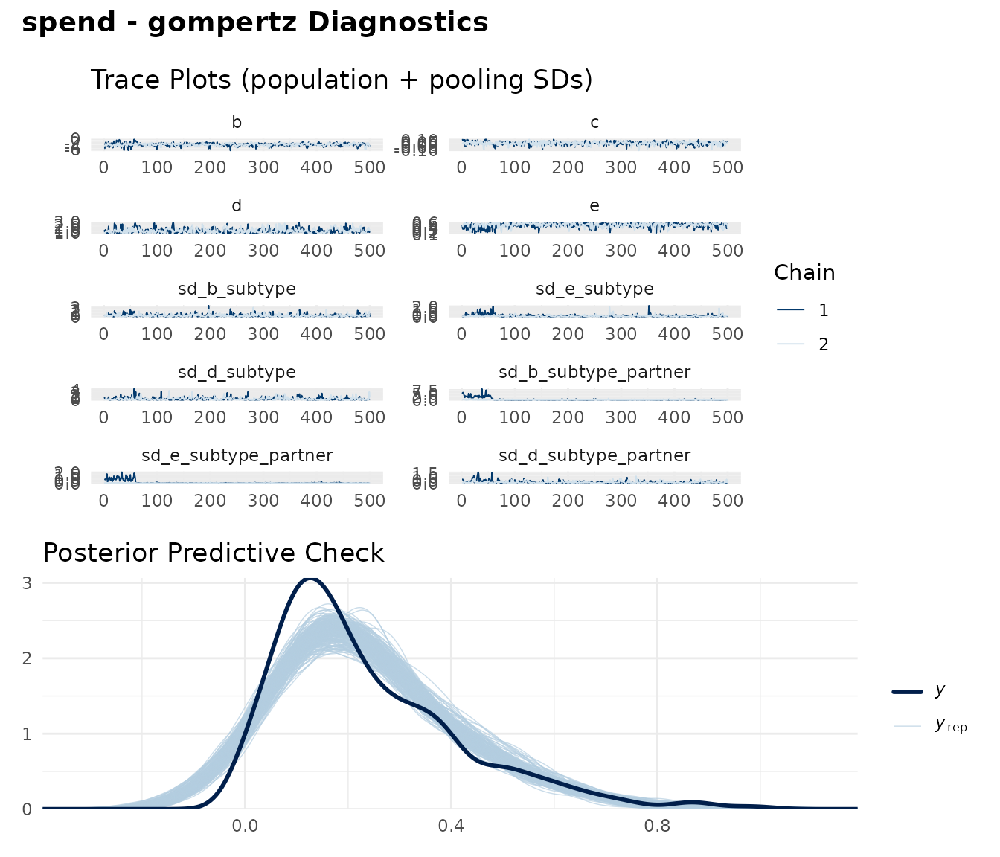
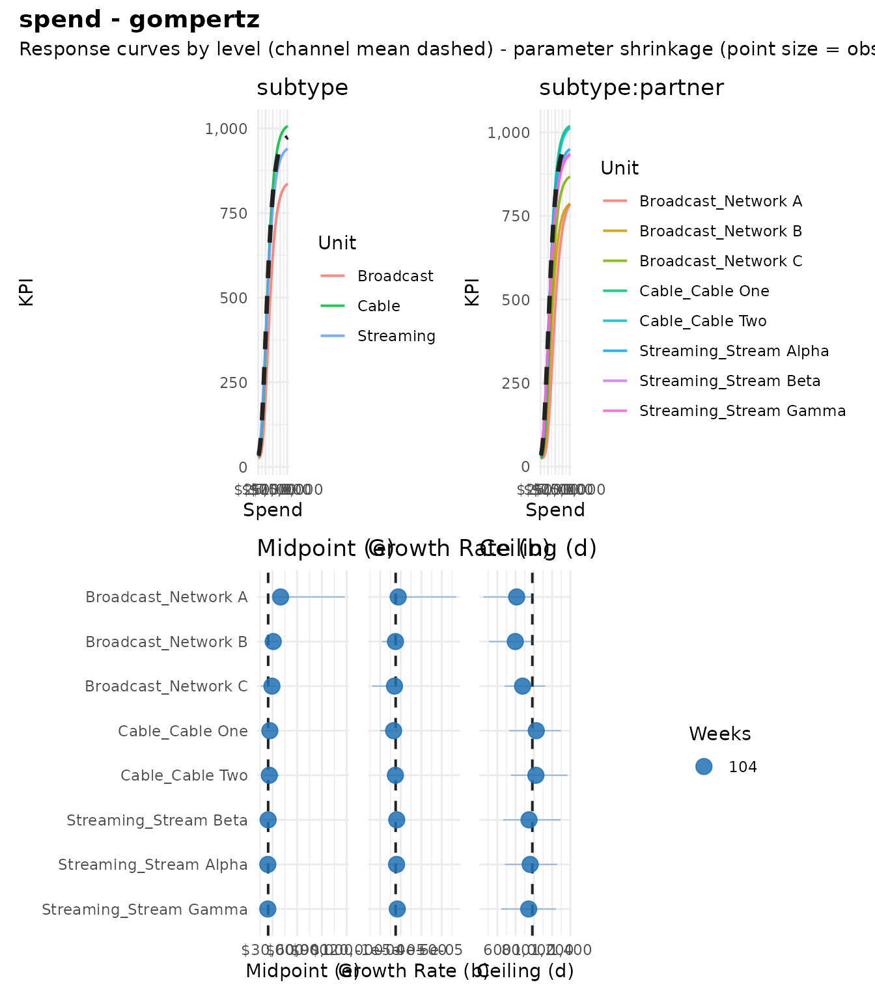
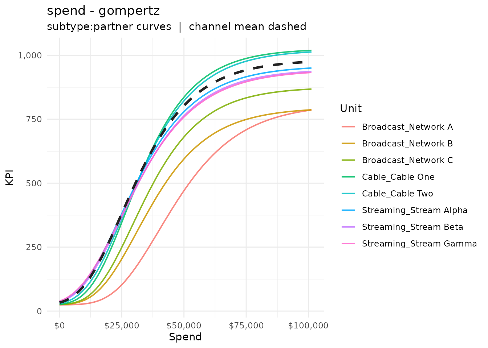
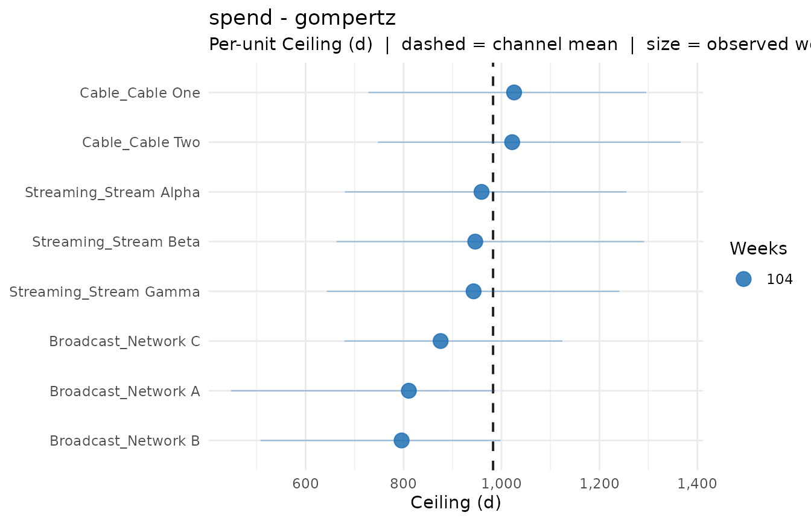
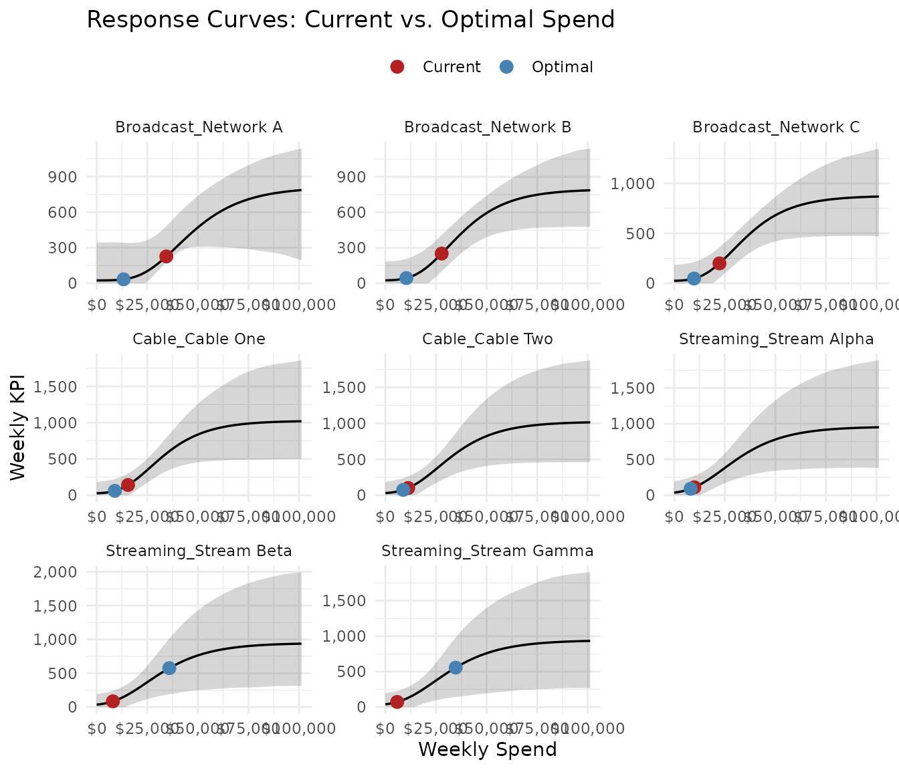

Hierarchical Models
hierarchical_models.RmdMedia channels are rarely homogeneous. TV spend spans broadcast, cable, and streaming — each with different audience reach and saturation dynamics. Social covers multiple partners, tactics, and creatives. Standard response curve modeling treats the channel as a single unit, which either overfits sparse sub-channel data or discards useful granularity.
fit_response_hier() fits a single hierarchical model
where curve parameters are partially pooled across
sub-channel groupings. Sparse units borrow strength from
better-identified peers, while well-observed units retain their
individual character. This vignette walks through the full hierarchical
workflow using the built-in mrmopt_hier_data dataset.
The data
mrmopt_hier_data contains weekly spend and conversions
for eight TV partners nested within three subtypes:
data(mrmopt_hier_data)
mrmopt_hier_data
#> # A tibble: 832 × 5
#> subtype partner week spend conversions
#> <fct> <fct> <date> <dbl> <int>
#> 1 Broadcast Network A 2023-01-02 28697 207
#> 2 Broadcast Network A 2023-01-09 40046 309
#> 3 Broadcast Network A 2023-01-16 48440 615
#> 4 Broadcast Network A 2023-01-23 30736 279
#> 5 Broadcast Network A 2023-01-30 29766 465
#> 6 Broadcast Network A 2023-02-06 29779 375
#> 7 Broadcast Network A 2023-02-13 21791 152
#> 8 Broadcast Network A 2023-02-20 23376 87
#> 9 Broadcast Network A 2023-02-27 30683 117
#> 10 Broadcast Network A 2023-03-06 50970 490
#> # ℹ 822 more rows
mrmopt_hier_data |>
group_by(subtype, partner) |>
summarise(
weeks = n(),
avg_spend = mean(spend),
avg_conv = mean(conversions),
.groups = "drop"
)
#> # A tibble: 8 × 5
#> subtype partner weeks avg_spend avg_conv
#> <fct> <fct> <int> <dbl> <dbl>
#> 1 Broadcast Network A 104 34424. 327.
#> 2 Broadcast Network B 104 27800. 257.
#> 3 Broadcast Network C 104 22375. 214.
#> 4 Cable Cable One 104 15500. 152.
#> 5 Cable Cable Two 104 11246. 113.
#> 6 Streaming Stream Alpha 104 9960. 120.
#> 7 Streaming Stream Beta 104 8031. 92.6
#> 8 Streaming Stream Gamma 104 5807. 76.5The hierarchy has two levels: subtype (Broadcast, Cable,
Streaming) and partner (the individual units within each
subtype). Broadcast partners have higher spend and ceiling than
Streaming partners, but all share a common curve family.
ggplot(mrmopt_hier_data, aes(x = spend, y = conversions)) +
geom_point(alpha = 0.4, size = 1) +
facet_wrap(~partner, scales = "free") +
scale_x_continuous(labels = scales::dollar_format(scale = 1e-3, suffix = "k")) +
labs(x = "Weekly Spend", y = "Conversions") +
theme_minimal()
When to use hierarchical models
Use fit_response_hier() when:
- A channel has natural sub-groups (partners, tactics, creatives, regions) that share a common response shape but differ in scale
- Some sub-groups have sparse data — too few weeks to identify a curve on their own, but enough to contribute information when pooled
- You want per-unit response curves for optimization or reporting, but don’t want to fit each unit independently and risk overfitting
Do not use hierarchical models when:
- Sub-groups have fundamentally different response dynamics (different curve types, not just different parameters). Fit them separately.
- You have only one grouping level with 2 groups — the pooling SD will be poorly identified.
- All sub-groups have ample data and you don’t need borrowing.
Independent fits via
fit_response()are simpler and faster.
Fit the hierarchical model
Specify the grouping columns in order from broadest to finest:
fit_tv <- fit_response_hier(
data = mrmopt_hier_data,
spend = "spend",
kpi = "conversions",
date = "week",
group = c("subtype", "partner"),
type = "gompertz",
pool = c("b", "e", "d"),
midpoint_range = c(0.1, 0.6),
ceiling_max = 3,
refresh = 0,
iter = 1000,
chains = 2
)
#> conversions ~ c + (d - c) * exp(-exp(b * (spend - e)))
#> b ~ 1 + (1 | subtype) + (1 | subtype:partner)
#> c ~ 1
#> d ~ 1 + (1 | subtype) + (1 | subtype:partner)
#> e ~ 1 + (1 | subtype) + (1 | subtype:partner)The group argument defines the nesting structure. With
group = c("subtype", "partner"), the model fits:
- Fixed effects: The channel-level (population) mean curve
-
Random effects at level 1 (
subtype): Deviations for Broadcast, Cable, Streaming -
Random effects at level 2
(
subtype:partner): Partner-level deviations nested within subtypes
The pool argument controls which parameters receive
random effects. The default c("b", "e", "d") pools
steepness, midpoint, and ceiling. The floor c is shared
across all units — it represents baseline conversions at zero spend,
which is usually a channel-level property.
Diagnostics
Check convergence the same way as a single-channel model:
mrm_plot_hier_diagnostics(fit_tv)
Look for the same targets: clean trace plots, Rhat ≤ 1.01, ESS > 400. The hierarchical model has more parameters (population + group SDs + per-unit deviations), so convergence can be slower. If you see issues, try:
- Increasing
iterandwarmup - Reducing the number of pooled parameters (e.g.,
pool = c("b", "e")) - Increasing
adapt_deltaviacontrol = list(adapt_delta = 0.99)
Summaries
print() provides a concise overview:
print(fit_tv)
#> -- Hierarchical Response Curve: gompertz -------------------------------------
#> Channel: spend | KPI: conversions
#> -- Hierarchy -----------------------------------------------------------------
#> Level 1: subtype 3 unit(s)
#> Level 2: partner 8 unit(s)
#> Pooled parameters: b, e, d
#> -- Channel-Level Parameters (mean curve) -------------------------------------
#> b (growth rate): -6.25e-05
#> c (floor): 24
#> d (ceiling): 983
#> e (midpoint): $24,824
#> -- Sub-Channel Units (8) -----------------------------------------------------
#> unit wkly spend KPI ceiling (d)
#> Broadcast_Network $34,424 227 811
#> Broadcast_Network $27,800 252 796
#> Broadcast_Network $22,375 199 876
#> Cable_Cable One $15,500 141 1,026
#> Cable_Cable Two $11,246 100 1,022
#> Streaming_Stream A $9,960 110 959
#> Streaming_Stream B $8,031 85 946
#> Streaming_Stream G $5,807 72 943
#> -- Bayes R2 ------------------------------------------------------------------
#> R2: 0.6372 (95% CI: [0.5357, 0.6658])
#>
#> Use summary(x) for brms diagnostics; mrm_summary_hier(x) for the full table.mrm_summary_hier() produces a detailed summary with one
row per unit at every hierarchy level, plus a channel-level
aggregate:
mrm_summary_hier(fit_tv)
#> # A tibble: 12 × 40
#> id level channel rc_type weekly_spend weekly_units kpi_at_current
#> <chr> <chr> <chr> <chr> <dbl> <dbl> <dbl>
#> 1 Broadcast subt… Broadc… gomper… 28200. NA 264.
#> 2 Cable subt… Cable gomper… 13373. NA 129.
#> 3 Streaming subt… Stream… gomper… 7933. NA 86.5
#> 4 Broadcast_Net… subt… Broadc… gomper… 34424. NA 227.
#> 5 Broadcast_Net… subt… Broadc… gomper… 27800. NA 252.
#> 6 Broadcast_Net… subt… Broadc… gomper… 22375. NA 199.
#> 7 Cable_Cable O… subt… Cable_… gomper… 15500. NA 141.
#> 8 Cable_Cable T… subt… Cable_… gomper… 11246. NA 100.
#> 9 Streaming_Str… subt… Stream… gomper… 9960. NA 110.
#> 10 Streaming_Str… subt… Stream… gomper… 8031. NA 84.7
#> 11 Streaming_Str… subt… Stream… gomper… 5807. NA 71.9
#> 12 (channel) chan… (chann… gomper… 16893. NA 210.
#> # ℹ 33 more variables: ar_at_current <dbl>, mr_at_current <dbl>,
#> # cp_at_current <dbl>, rr_at_current <dbl>, b <dbl>, c <dbl>, d <dbl>,
#> # e <dbl>, range_min_spend <dbl>, range_min_units <dbl>, range_min_kpi <dbl>,
#> # range_min_cp <dbl>, range_min_ar <dbl>, range_min_mr <dbl>,
#> # range_min_rr <dbl>, range_peak_spend <dbl>, range_peak_units <dbl>,
#> # range_peak_kpi <dbl>, range_peak_cp <dbl>, range_peak_ar <dbl>,
#> # range_peak_mr <dbl>, range_peak_rr <dbl>, range_max_spend <dbl>, …Each row shows the fitted curve parameters, current performance, and the efficient operating range (range_min to range_max) for that unit.
Visualization
Response curves by level
The dashboard view shows response curves at each hierarchy level:
mrm_plot_hier(fit_tv)
For response curves at a specific level:
mrm_plot_hier_response(fit_tv)
Shrinkage
The shrinkage plot shows how each unit’s parameter estimate is pulled toward the group mean by partial pooling. Units with more data are pulled less; units with sparse data are pulled more:
mrm_plot_hier_shrinkage(fit_tv, param = "d")
This is the core benefit of hierarchical modeling — sparse partners get regularized estimates rather than noisy independent fits.
Per-unit optimization
To optimize across sub-channel units, convert the hierarchical fit to
a list of single-curve model views using
as_mrmfit_list():
unit_fits <- as_mrmfit_list(fit_tv)
names(unit_fits)
#> [1] "Broadcast_Network A" "Broadcast_Network B" "Broadcast_Network C"
#> [4] "Cable_Cable One" "Cable_Cable Two" "Streaming_Stream Alpha"
#> [7] "Streaming_Stream Beta" "Streaming_Stream Gamma"Each element is an mrmfit_hier_unit object that behaves
like a regular mrmfit for optimization purposes. Pass the
list to opt_mix():
opt_units <- opt_mix(unit_fits, budget = 130000)
#>
#> Optimization setup:
#> Channels: 8
#> Method: point
#> Objective: max_kpi
#> Weekly budget: 130,000
#>
#> Optimization converged (status: 4 )
#> Total weekly KPI: 1,480
opt_summary(opt_units)
#> -- Optimization Result (point) -----------------------------------------------
#> Budget: $130,000/week | Channels: 8
#> -- Optimal Allocation --------------------------------------------------------
#> Channel Weekly Spend Weekly KPI CP Share
#> Streaming_Stream Beta $35,887 575 $62 27.6%
#> Streaming_Stream Gamma $34,740 556 $62 26.7%
#> Streaming_Stream Alpha $8,139 90 $91 6.3%
#> Cable_Cable Two $8,781 73 $119 6.8%
#> Cable_Cable One $8,984 60 $150 6.9%
#> Broadcast_Network C $9,828 48 $205 7.6%
#> Broadcast_Network B $10,335 44 $234 7.9%
#> Broadcast_Network A $13,307 34 $395 10.2%
#> -- Totals --------------------------------------------------------------------
#> Optimal: Spend $130,000 | KPI 1,480 | Avg CP $88
#> Current: Spend $135,144 | KPI 1,186 | Avg CP $114
#> Change: KPI +24.8% | CP $26The optimizer now allocates spend across all eight partners simultaneously, respecting each unit’s response curve:
opt_plot_curves(opt_units)
Optimizing at a higher level
By default, as_mrmfit_list() extracts at the innermost
(finest) level. To optimize at the subtype level instead:
subtype_fits <- as_mrmfit_list(fit_tv, level = "subtype")
names(subtype_fits)
#> [1] "Broadcast" "Cable" "Streaming"
opt_subtypes <- opt_mix(subtype_fits, budget = 130000)
#>
#> Optimization setup:
#> Channels: 3
#> Method: point
#> Objective: max_kpi
#> Weekly budget: 130,000
#>
#> Optimization converged (status: 4 )
#> Total weekly KPI: 1,966
opt_summary(opt_subtypes)
#> -- Optimization Result (point) -----------------------------------------------
#> Budget: $130,000/week | Channels: 3
#> -- Optimal Allocation --------------------------------------------------------
#> Channel Weekly Spend Weekly KPI CP Share
#> Cable $44,331 750 $59 34.1%
#> Streaming $40,645 656 $62 31.3%
#> Broadcast $45,023 560 $80 34.6%
#> -- Totals --------------------------------------------------------------------
#> Optimal: Spend $130,000 | KPI 1,966 | Avg CP $66
#> Current: Spend $49,506 | KPI 480 | Avg CP $103
#> Change: KPI +309.5% | CP $37This is useful when you control budget at the subtype level but want the subtype-level curves to reflect partial pooling from the partner data below.
The pool parameter
The choice of which parameters to pool affects how much information is shared:
| Setting | Effect |
|---|---|
pool = c("b", "e", "d") |
Default. Shape and scale vary by unit. Most flexible. |
pool = c("b", "e") |
Shape varies; ceiling d is fixed at channel level. Use
when units have similar market size. |
pool = c("d") |
Only scale varies; shape is shared. Use when units have similar saturation dynamics but different sizes. |
pool = c("b", "c", "d", "e") |
All four parameters pooled. Maximum borrowing. |
Adding more pooled parameters increases model complexity and can slow
convergence. Start with the default and remove parameters from
pool if convergence is poor or if domain knowledge says
certain parameters should be shared.
Where to go next
| Topic | Vignette |
|---|---|
| Budget optimization objectives and constraints | Optimization |
| Prior tuning when hierarchical fits struggle | Priors & Model Tuning |
| Mathematical foundations of the six curve forms | Response Curve Theory |